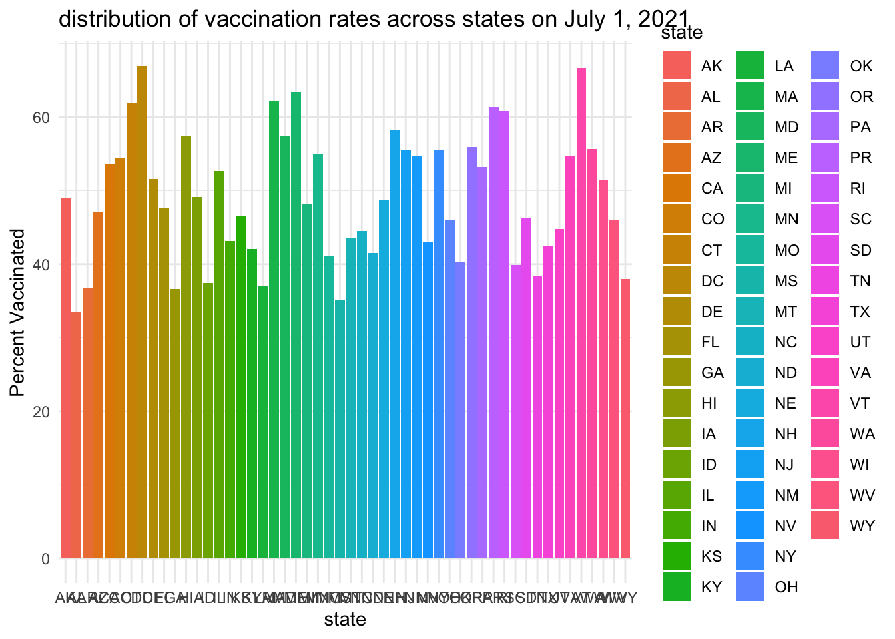
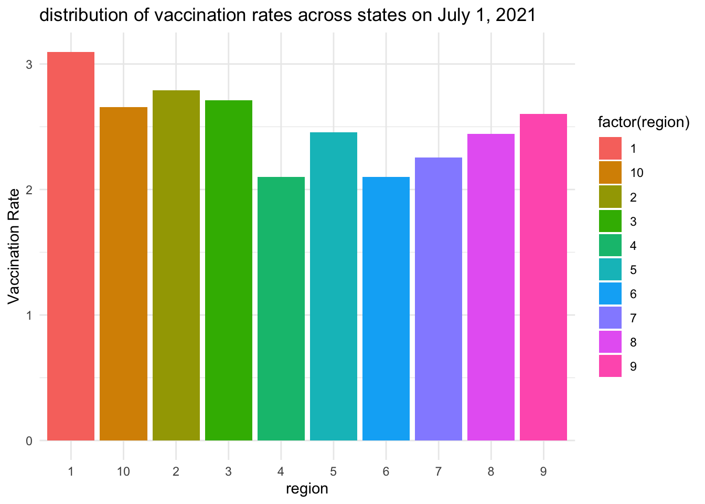

In this problem set, we aim to use data visualization to explore the following questions:
Based on SARS-Cov-2 cases, COVID-19 deaths and hospitalizations what periods defined the worst two waves of 2020-2021?
Did states with higher vaccination rates experience lower COVID-19 death rates?
Were there regional differences in vaccination rates?
We are not providing definitive answers to these questions but rather generating visualizations that may offer insights.
Objective
We will create a single data frame that contains relevant observations for each jurisdiction, for each Morbidity and Mortality Weekly Report (MMWR) period in 2020 and 2021. The key outcomes of interest are:
SARS-CoV-2 cases
COVID-19 hospitalizations
COVID-19 deaths
Individuals receiving their first COVID-19 vaccine dose
Individuals receiving a booster dose
Task Breakdown
Your task is divided into three parts:
Download the data: Retrieve population data from the US Census API and COVID-19 statistics from the CDC API.
Wrangle the data: Clean and join the datasets to create a final table containing all the necessary information.
Create visualizations: Generate graphs to explore potential insights into the questions posed above.
Instructions
As usual, copy and place the pset-04-dataviz.qmd file in a new directory called p4.
Within your p4 directory, create the following directory:
code
Inside the code directory, include the following files:
funcs.R
wrangle.R
Detailed instructions follow for each of the tasks.
Download data
For this part we want the following:
Save all your code in a file called wrangle.R that produces the final data frame.
When executed, this code should save the final data frame in an RDA file in the data directory.
(1 point) Copy the relevant code from the previous homework to create the population data frame. Put this code in the the wrangle.R file in the code directory. Comment the code so we know where the population is created, where the regions are read in, and where we combine these.
Test that your wrangling code works. Comment the following code out:
source(file.path(getwd(), "./code/wrangle.R"))
── Attaching core tidyverse packages ──────────────────────── tidyverse 2.0.0 ──
✔ dplyr 1.1.4 ✔ readr 2.1.5
✔ forcats 1.0.0 ✔ stringr 1.5.1
✔ ggplot2 3.5.1 ✔ tibble 3.2.1
✔ lubridate 1.9.3 ✔ tidyr 1.3.1
✔ purrr 1.0.2
── Conflicts ────────────────────────────────────────── tidyverse_conflicts() ──
✖ dplyr::filter() masks stats::filter()
✖ dplyr::lag() masks stats::lag()
ℹ Use the conflicted package (<http://conflicted.r-lib.org/>) to force all conflicts to become errors
Warning: package 'janitor' was built under R version 4.3.3
Attaching package: 'janitor'
The following objects are masked from 'package:stats':
chisq.test, fisher.test
Attaching package: 'jsonlite'
The following object is masked from 'package:purrr':
flatten
head(population)
# A tibble: 6 × 6
state_name year population state region region_name
<chr> <dbl> <dbl> <chr> <fct> <chr>
1 Oklahoma 2020 3962031 OK 6 South Central
2 Oklahoma 2021 3986639 OK 6 South Central
3 Nebraska 2020 1961455 NE 7 Central Plains
4 Nebraska 2021 1963692 NE 7 Central Plains
5 Hawaii 2020 1451911 HI 9 Pacific
6 Hawaii 2021 1441553 HI 9 Pacific
(1 point) In the previous problem set we wrote the following script to download cases data:
api <-"https://data.cdc.gov/resource/pwn4-m3yp.json"cases_raw <-request(api) |>req_url_query("$limit"=10000000) |>req_perform() |>resp_body_json(simplifyVector =TRUE)
We are now going to download three other datasets from CDC that provide hospitalization, provisional COVID deaths, and vaccine data. A different endpoint is provided for each one, but the requests are the same otherwise. To avoid rewriting the same code more than once, write a function called get_cdc_data that receives and endpoint and returns a data frame. Save this code in a file called funcs.R.
(1 point) Use the function get_cdc_data to download the cases, hospitalization, deaths, and vaccination data and save the data frames. We recommend saving them into objects called: cases_raw, hosp_raw, deaths_raw, and vax_raw.
In this section, you will wrangle the files downloaded in the previous step into a single data frame containing all the necessary information. We recommend using the following column names: date, state, cases, hosp, deaths, vax, booster, and population.
Key Considerations
Align reporting periods: Ensure that the time periods for which each outcome is reported are consistent. Specifically, calculate the totals for each Morbidity and Mortality Weekly Report (MMWR) period.
Harmonize variable names: To facilitate the joining of datasets, rename variables so that they match across all datasets.
(1 point) One challenge is data frames use different column names to represent the same variable. Examine each data frame and report back 1) the name of the column with state abbreviations, 2) if the rate is yearly, monthly, or weekly, daily data, 3) all the column names that provide date information.
Outcome
Jurisdiction variable name
Rate
time variable names
cases
“state”
weekly
“start_date”
hospitalizations
“jurisdiction”
“daily”
“collection_date”
deaths
“state”
weekly
“year”, “week_ending_date”
vaccines
“location”
“daily”
“date”
(1 point) Wrangle the cases data frame to keep state, MMWR year, MMWR week, and the total number of cases for that week in that state. Keep only states for which we have population estimates. Hint: Use as_date, ymd_hms, epiweek and epiyear functions in the lubridate package. Comment appropriately. Display the result.
state mmwr_week mmwr_year cases
1 AZ 7 2023 3716
2 LA 50 2022 4041
3 GA 7 2023 5298
4 LA 12 2023 2203
5 LA 4 2023 5725
6 LA 11 2023 1961
(1 point) Now repeat the same exercise for hospitalizations. Note that you will have to collapse the data into weekly data and keep the same columns as in the cases dataset, except keep total weekly hospitalizations instead of cases. Remove weeks with less than 7 days reporting. Display your result and comment appropriately.
# A tibble: 6 × 4
state mmwr_week death mmwr_year
<chr> <dbl> <int> <dbl>
1 AL 1 0 2020
2 AL 2 0 2020
3 AL 3 0 2020
4 AL 4 NA 2020
5 AL 5 0 2020
6 AL 6 0 2020
(1 point) Repeat this now for vaccination data. Keep the variables series_complete and booster along with state and date. Display the result and comment appropriately. Hint: only use the rows with date_type == 'Admin' to only include vaccine data based on the day it was administered, rather than reported.
`summarise()` has grouped output by 'state', 'mmwr_week'. You can override
using the `.groups` argument.
head(vax_clean)
# A tibble: 6 × 5
state mmwr_week mmwr_year boost series
<chr> <dbl> <dbl> <int> <int>
1 AK 1 2021 0 8396
2 AK 1 2022 168597 449087
3 AK 1 2023 234178 476209
4 AK 2 2021 0 13560
5 AK 2 2022 176901 450884
6 AK 2 2023 234589 476376
(1 point) Now we are ready to join the tables. We will only consider 2020 and 2021 as we don’t have population sizes for 2022. However, because we want to guarantee that all dates are included we will create a data frame with all possible weeks. We can use this:
library(tidyverse)## Make dates data frameall_dates <-data.frame(date =seq(make_date(2020, 1, 25), make_date(2021, 12, 31), by ="week")) |>mutate(date =ceiling_date(date, unit ="week", week_start =7) -days(1)) |>mutate(mmwr_year =epiyear(date), mmwr_week =epiweek(date))#Uncomment to rundates_and_pop <-cross_join(all_dates, data.frame(state =unique(population$state))) |>left_join(population, by =c("state", "mmwr_year"="year"))dat <- dates_and_pop %>%left_join(cases_clean, by =c("state", "mmwr_year", "mmwr_week")) |>left_join(deaths_clean, by =c("state", "mmwr_year", "mmwr_week")) |>left_join(hosp_clean, by =c("state", "mmwr_year", "mmwr_week")) |>left_join(vax_clean, by =c("state", "mmwr_year", "mmwr_week")) |>arrange(state, date)
Now join all the tables to create your final table. Make sure it is ordered by date within each state. Call it dat. Show a few rows here.
Data visualization: generate some plots
We are now ready to create some figures. For each question below, write code that generates a plot that addresses the question.
(1 point) Plot a trend plot for cases, hospitalizations and deaths for each state. Color by region. Plot rates per \(100,000\) people. Place the plots on top of each other. Hint: Use pivot_longer and facet_wrap.
(1 point) To determine when vaccination started and when most of the population was vaccinated, compute the percent of the US population (including DC and Puerto Rico) vaccinated by date. Do the same for the booster. Then plot both percentages.
total_us_population <-sum(dat$population, na.rm =TRUE)vax_percent <- dat |>group_by(mmwr_year, mmwr_week, date) |>summarise(total_vacc =sum(series, na.rm =TRUE),total_boos =sum(boost, na.rm =TRUE),.groups ="drop" ) |>mutate(percent_vacc = (total_vacc / total_us_population) *100,percent_boos = (total_boos / total_us_population) *100 )vax_percent_long <- vax_percent |>pivot_longer(cols =c(percent_vacc, percent_boos),names_to ="metric",values_to ="percentage" )ggplot(vax_percent_long, aes(x = date, y = percentage, color = metric)) +geom_line() +labs(title ="Percentage of the US Population Vaccinated",x ="Date",y ="Percentage (%)",color ="Type" ) +theme_minimal() +theme(legend.position ="bottom",axis.text.x =element_text(angle =45, hjust =1))
(1 point) Plot the distribution of vaccination rates across states on July 1, 2021.
vax_july <- dat |>filter(mmwr_year ==2021, mmwr_week ==epiweek(as.Date("2021-07-01"))) |>group_by(state) |>summarize(percent_vacc =mean(series / population *100, na.rm =TRUE)) |>ungroup()ggplot(vax_july, aes(x = percent_vacc)) +geom_histogram(bins =60,fill ="blue",alpha =0.6,color ="black" ) +labs(title ="distribution of vaccination rates across states on July 1, 2021", x ="Vaccination Rate", y ="Number of States") +theme_minimal()

(1 point) Is there a difference across region? Generate a plot of your choice.
vax_july <- dat |>filter(mmwr_week ==epiweek(as.Date("2021-07-01"))) |>group_by(state, region, region_name) |>summarize(percent_vacc =mean(series / population *100, na.rm =TRUE))
`summarise()` has grouped output by 'state', 'region'. You can override using
the `.groups` argument.
ggplot(vax_july, aes(x = region, y = percent_vacc, fill = region_name)) +geom_boxplot(alpha =0.7) +labs(title ="distribution of vaccination rates across states on July 1, 2021", x ="region", y ="Vaccination Rate") +theme_minimal()

Discuss what the plot shows.
There is a difference in vaccination rates across regions. New England have the highest rate. Pacific and pacific northwest had more consistent rates. Southern regions had lower rates. This tells us that the region is having difference, it might be policy of government issue(just guessing). And south region have less big city than Pacific does, so that might be another issue due to the rate. And in region 1, 3,6 and 8 have outlieres in upper bound.
(1 point) Using the previous figures, identify a time period that meets the following criteria:
A significant COVID-19 wave occurred across the United States.
A sufficient number of people had been vaccinated.
Next, follow these steps:
For each state, calculate the COVID-19 deaths per day per 100,000 people during the selected time period.
Determine the vaccination rate (primary series) in each state as of the last day of the period.
Create a scatter plot to visualize the relationship between these two variables:
The x-axis should represent the vaccination rate.
The y-axis should represent the deaths per day per 100,000 people.
`summarise()` has grouped output by 'state'. You can override using the
`.groups` argument.
ggplot(series_period_time,aes(x = series_rate, y = deaths_per_day_100k)) +geom_point(color ="red",size =1,alpha =0.5) +labs(title ="2021-07-01 to 2021-09-30 vaccination rates vs. death per daily per 100k", x ="series_rate", y ="deaths_per_day_100k") +theme_minimal()
`summarise()` has grouped output by 'state'. You can override using the
`.groups` argument.
ggplot(booster_period_time,aes(x = booster_rate, y = deaths_per_day_100k)) +geom_point(color ="red",size =1,alpha =0.5) +labs(title ="2021-07-01 to 2021-09-30 booster vaccination rates vs. death per daily per 100k", x ="booster_rate", y ="deaths_per_day_100k") +theme_minimal()